|
Project 4: Image Warping E Harrison — CS180, Fall 2026 |
OverviewIn this project I stitch photos together into panoramas. I pick matching points between overlapping photos, solve for the homography between them, warp the images into a shared frame, and blend them into a mosaic. |
Part A: Image Warping and MosaicingA.1 Shoot the PicturesI shot three sets of photos around campus, rotating the camera about a fixed center of projection between shots. The Gateway and Sather Gate sets pan left to right, and the Tree set pans from the ground up to the sky. |
| Gateway | ||
|---|---|---|
Image 1 |
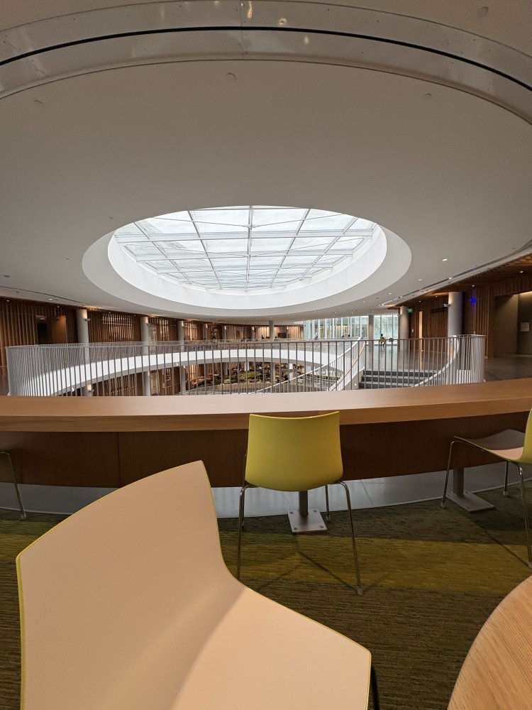 Image 2 |
Image 3 |
Sather Gate | ||
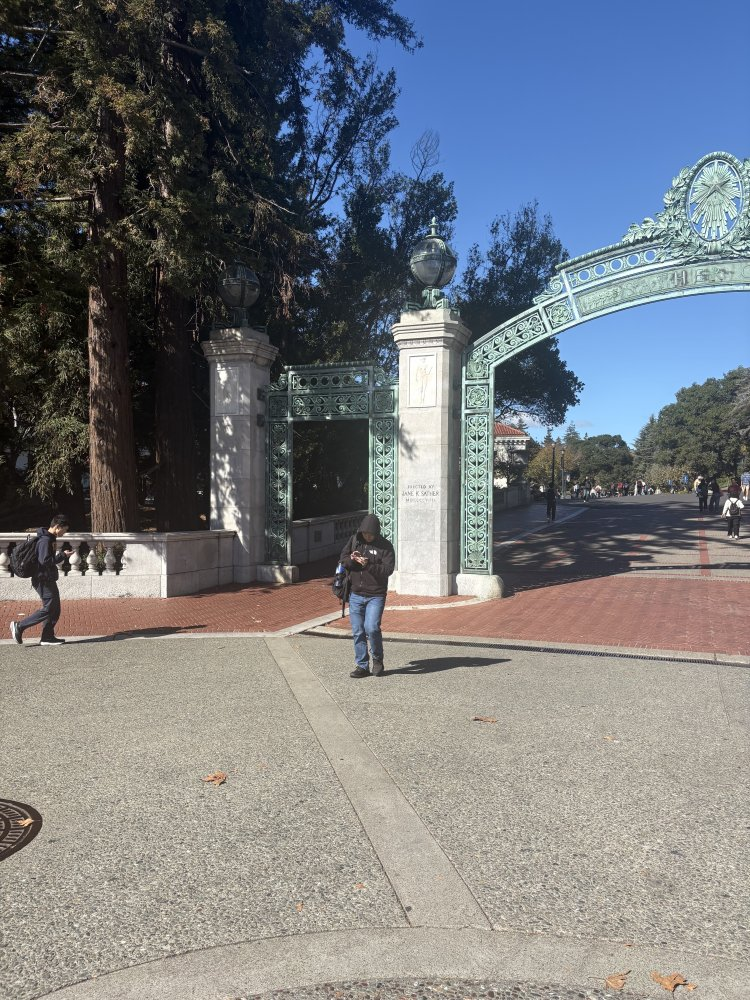 Image 1 |
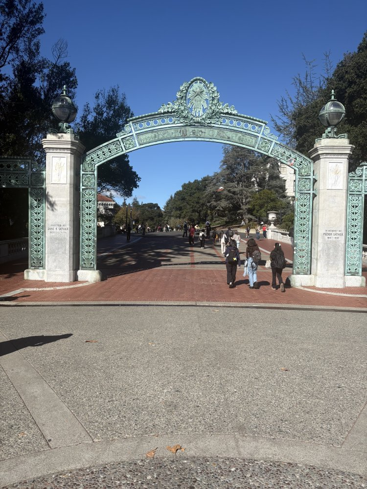 Image 2 |
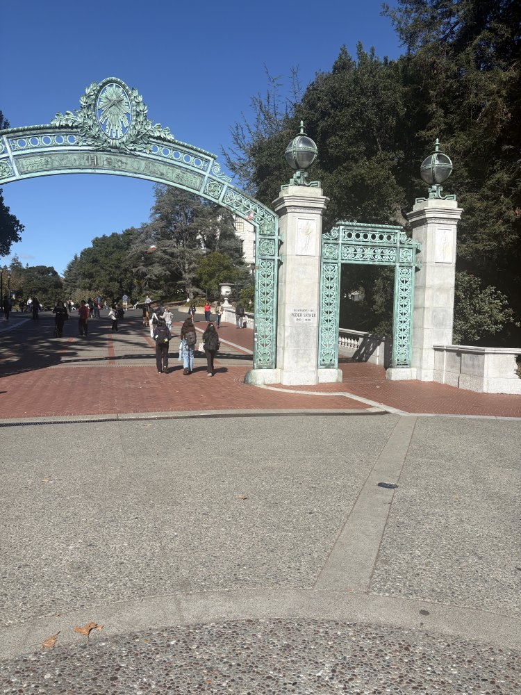 Image 3 |
Tree | ||
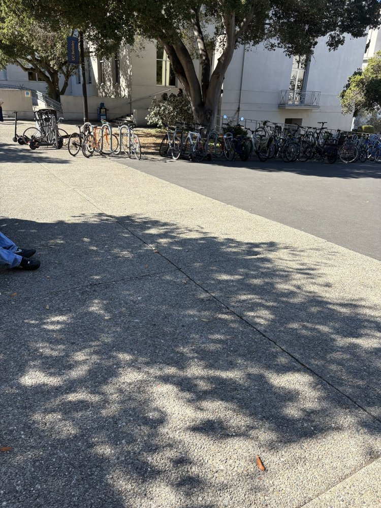 Image 1 |
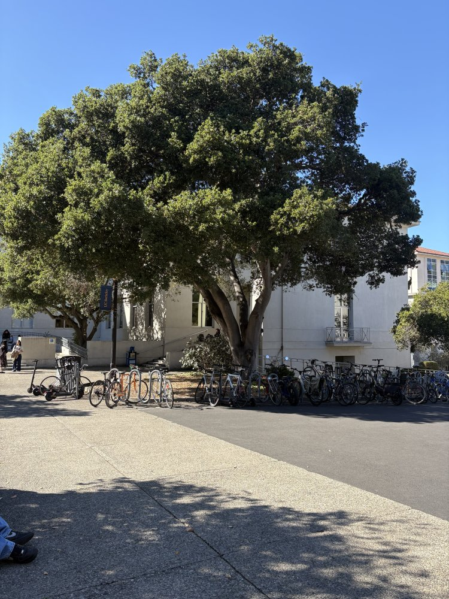 Image 2 |
Image 3 |
A.2 Recover Homographies
A homography maps a point
I picked 5–6 correspondences per pair, stacked their equations into
|
Below are the correspondences for each pair (matching numbers are the same point), the full system of equations (click to expand), and the recovered homography. |
| Gateway: image 1 → image 2 (6 correspondences) | ||||||||||||||||||||||||||||||||||||||||||||||||||||||||||||||||||||||||||||||||||||||||||||||||||||||||||||||||||||||
|---|---|---|---|---|---|---|---|---|---|---|---|---|---|---|---|---|---|---|---|---|---|---|---|---|---|---|---|---|---|---|---|---|---|---|---|---|---|---|---|---|---|---|---|---|---|---|---|---|---|---|---|---|---|---|---|---|---|---|---|---|---|---|---|---|---|---|---|---|---|---|---|---|---|---|---|---|---|---|---|---|---|---|---|---|---|---|---|---|---|---|---|---|---|---|---|---|---|---|---|---|---|---|---|---|---|---|---|---|---|---|---|---|---|---|---|---|---|---|
|
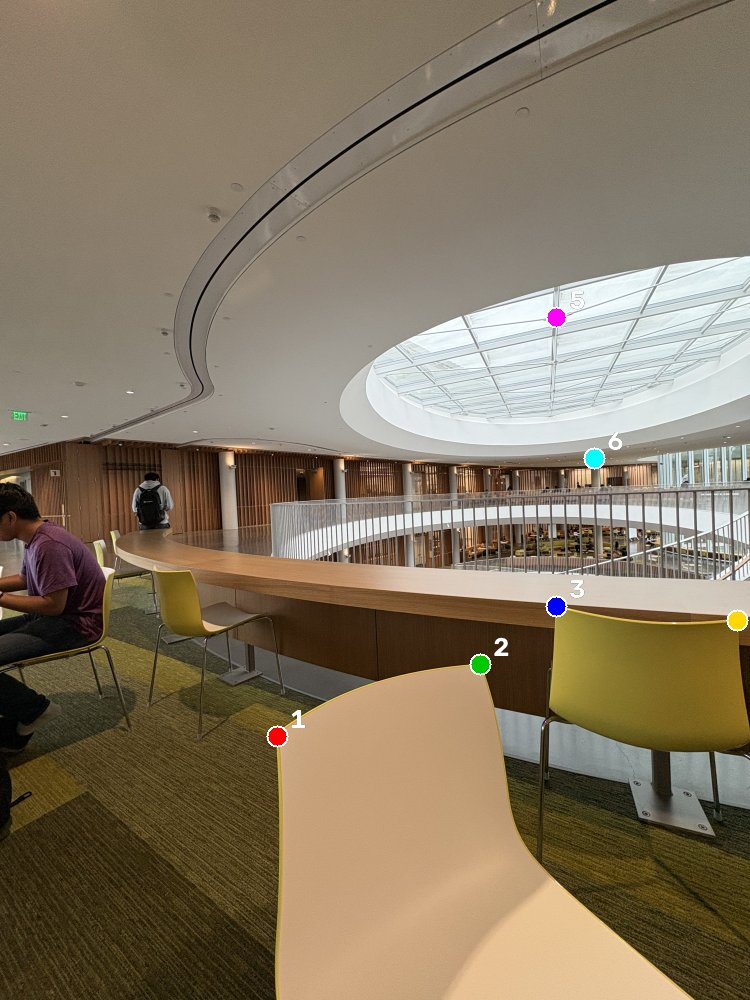 Image 1 |
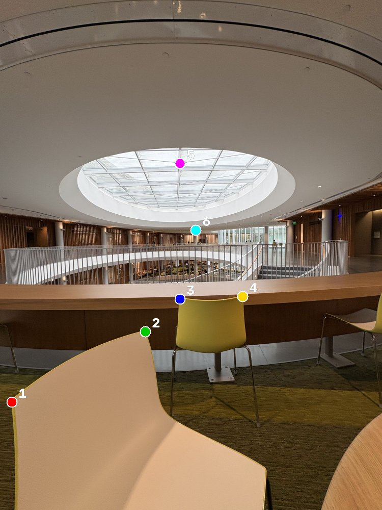 Image 2 |
|||||||||||||||||||||||||||||||||||||||||||||||||||||||||||||||||||||||||||||||||||||||||||||||||||||||||||||||||||||
System of equations
|
||||||||||||||||||||||||||||||||||||||||||||||||||||||||||||||||||||||||||||||||||||||||||||||||||||||||||||||||||||||
| 1 120 | 2 968 | 1 | 0 | 0 | 0 | -107 520 | -284 928 |
| 0 | 0 | 0 | 1 120 | 2 968 | 1 | -3 561 600 | -9 438 240 |
| 1 936 | 2 681 | 1 | 0 | 0 | 0 | -2 230 272 | -3 088 512 |
| 0 | 0 | 0 | 1 936 | 2 681 | 1 | -5 076 192 | -7 029 582 |
| 2 244 | 2 446 | 1 | 0 | 0 | 0 | -3 197 700 | -3 485 550 |
| 0 | 0 | 0 | 2 244 | 2 446 | 1 | -5 304 816 | -5 782 344 |
| 2 973 | 2 501 | 1 | 0 | 0 | 0 | -5 714 106 | -4 806 922 |
| 0 | 0 | 0 | 2 973 | 2 501 | 1 | -6 968 712 | -5 862 344 |
| 2 245 | 1 279 | 1 | 0 | 0 | 0 | -3 196 880 | -1 821 296 |
| 0 | 0 | 0 | 2 245 | 1 279 | 1 | -2 898 295 | -1 651 189 |
| 2 398 | 1 849 | 1 | 0 | 0 | 0 | -3 719 298 | -2 867 799 |
| 0 | 0 | 0 | 2 398 | 1 849 | 1 | -4 366 758 | -3 367 029 |
| 96 |
| 3 180 |
| 1 152 |
| 2 622 |
| 1 425 |
| 2 364 |
| 1 922 |
| 2 344 |
| 1 424 |
| 1 291 |
| 1 551 |
| 1 821 |
| 3.3441 | 0.0326 | -3653.94 |
| 1.5414 | 2.5539 | -3202.77 |
| 7.579e-4 | 2.314e-5 | 1.0000 |
| Gateway: image 3 → image 2 (5 correspondences) | ||||||||||||||||||||||||||||||||||||||||||||||||||||||||||||||||||||||||||||||||||||||||||||||||||||
|---|---|---|---|---|---|---|---|---|---|---|---|---|---|---|---|---|---|---|---|---|---|---|---|---|---|---|---|---|---|---|---|---|---|---|---|---|---|---|---|---|---|---|---|---|---|---|---|---|---|---|---|---|---|---|---|---|---|---|---|---|---|---|---|---|---|---|---|---|---|---|---|---|---|---|---|---|---|---|---|---|---|---|---|---|---|---|---|---|---|---|---|---|---|---|---|---|---|---|---|---|
|
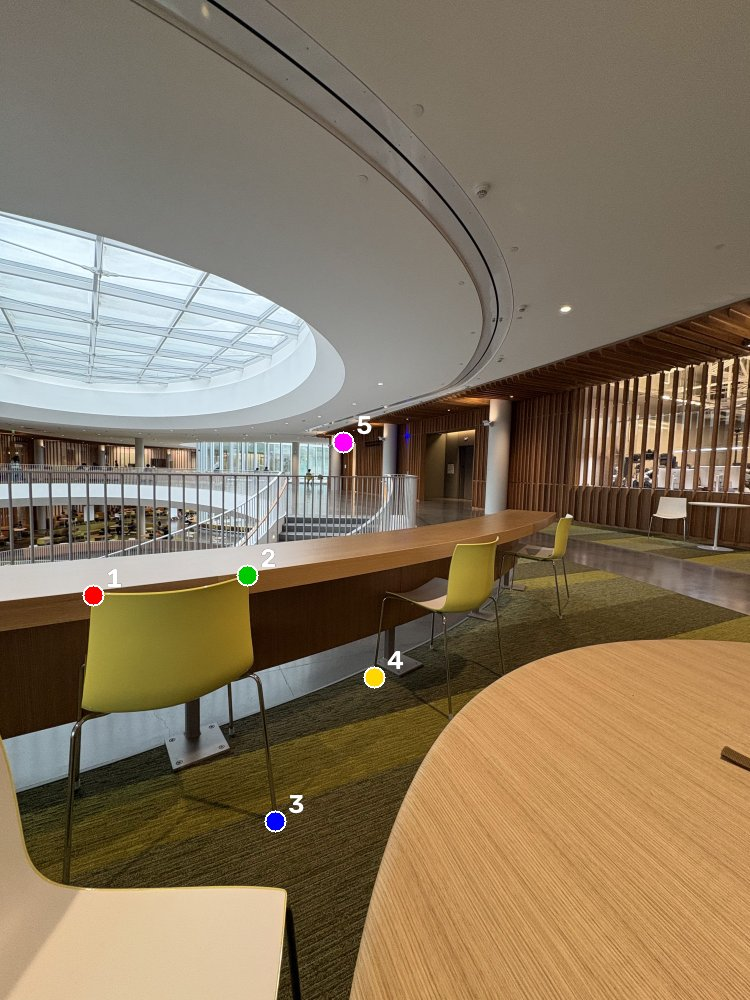 Image 3 |
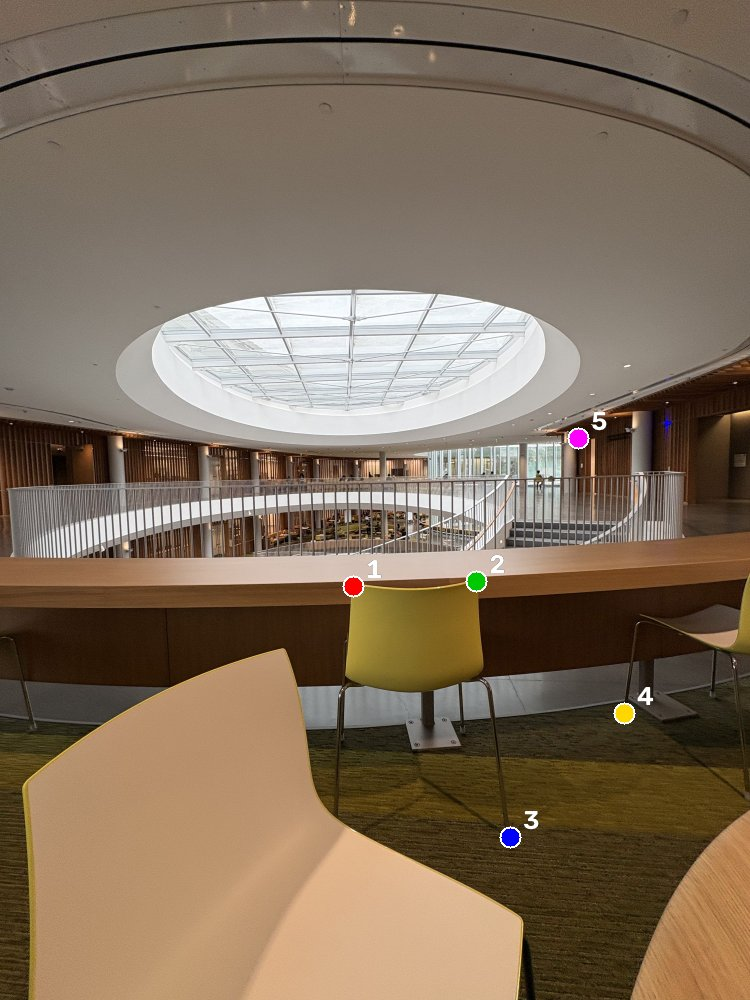 Image 2 |
|||||||||||||||||||||||||||||||||||||||||||||||||||||||||||||||||||||||||||||||||||||||||||||||||||
System of equations
|
||||||||||||||||||||||||||||||||||||||||||||||||||||||||||||||||||||||||||||||||||||||||||||||||||||
| 375 | 2 400 | 1 | 0 | 0 | 0 | -534 375 | -3 420 000 |
| 0 | 0 | 0 | 375 | 2 400 | 1 | -886 500 | -5 673 600 |
| 998 | 2 322 | 1 | 0 | 0 | 0 | -1 918 156 | -4 462 884 |
| 0 | 0 | 0 | 998 | 2 322 | 1 | -2 339 312 | -5 442 768 |
| 1 112 | 3 311 | 1 | 0 | 0 | 0 | -2 288 496 | -6 814 038 |
| 0 | 0 | 0 | 1 112 | 3 311 | 1 | -3 754 112 | -11 177 936 |
| 1 511 | 2 731 | 1 | 0 | 0 | 0 | -3 806 209 | -6 879 389 |
| 0 | 0 | 0 | 1 511 | 2 731 | 1 | -4 347 147 | -7 857 087 |
| 1 385 | 1 786 | 1 | 0 | 0 | 0 | -3 229 820 | -4 164 952 |
| 0 | 0 | 0 | 1 385 | 1 786 | 1 | -2 447 295 | -3 155 862 |
| 1 425 |
| 2 364 |
| 1 922 |
| 2 344 |
| 2 058 |
| 3 376 |
| 2 519 |
| 2 877 |
| 2 332 |
| 1 767 |
| 0.2705 | 0.0177 | 1155.18 |
| -0.4989 | 0.7636 | 510.54 |
| -2.394e-4 | 6.348e-7 | 1.0000 |
| Sather Gate: image 1 → image 2 (5 correspondences) | ||||||||||||||||||||||||||||||||||||||||||||||||||||||||||||||||||||||||||||||||||||||||||||||||||||
|---|---|---|---|---|---|---|---|---|---|---|---|---|---|---|---|---|---|---|---|---|---|---|---|---|---|---|---|---|---|---|---|---|---|---|---|---|---|---|---|---|---|---|---|---|---|---|---|---|---|---|---|---|---|---|---|---|---|---|---|---|---|---|---|---|---|---|---|---|---|---|---|---|---|---|---|---|---|---|---|---|---|---|---|---|---|---|---|---|---|---|---|---|---|---|---|---|---|---|---|---|
|
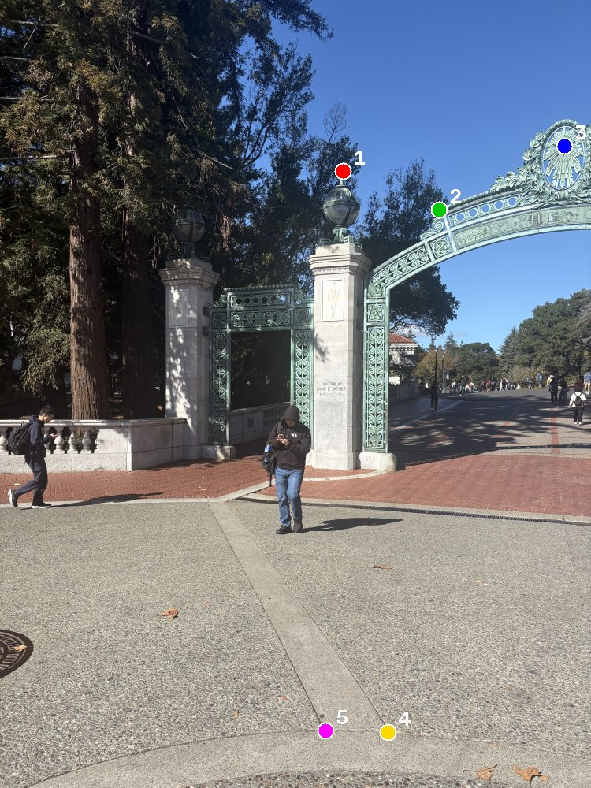 Image 1 |
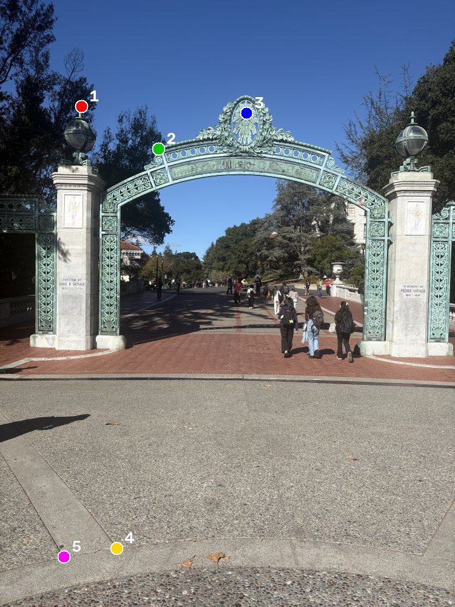 Image 2 |
|||||||||||||||||||||||||||||||||||||||||||||||||||||||||||||||||||||||||||||||||||||||||||||||||||
System of equations
|
||||||||||||||||||||||||||||||||||||||||||||||||||||||||||||||||||||||||||||||||||||||||||||||||||||
| 2 486 | 1 243 | 1 | 0 | 0 | 0 | -1 904 276 | -952 138 |
| 0 | 0 | 0 | 2 486 | 1 243 | 1 | -2 495 944 | -1 247 972 |
| 3 184 | 1 524 | 1 | 0 | 0 | 0 | -4 747 344 | -2 272 284 |
| 0 | 0 | 0 | 3 184 | 1 524 | 1 | -4 473 520 | -2 141 220 |
| 4 092 | 1 061 | 1 | 0 | 0 | 0 | -9 509 808 | -2 465 764 |
| 0 | 0 | 0 | 4 092 | 1 061 | 1 | -4 370 256 | -1 133 148 |
| 2 812 | 5 312 | 1 | 0 | 0 | 0 | -3 090 388 | -5 837 888 |
| 0 | 0 | 0 | 2 812 | 5 312 | 1 | -14 515 544 | -27 420 544 |
| 2 362 | 5 296 | 1 | 0 | 0 | 0 | -1 424 286 | -3 193 488 |
| 0 | 0 | 0 | 2 362 | 5 296 | 1 | -12 383 966 | -27 766 928 |
| 766 |
| 1 004 |
| 1 491 |
| 1 405 |
| 2 324 |
| 1 068 |
| 1 099 |
| 5 162 |
| 603 |
| 5 243 |
| 1.5543 | -3.039e-4 | -2863.59 |
| 0.3388 | 1.3958 | -1256.01 |
| 1.214e-4 | 6.840e-6 | 1.0000 |
| Sather Gate: image 3 → image 2 (5 correspondences) | ||||||||||||||||||||||||||||||||||||||||||||||||||||||||||||||||||||||||||||||||||||||||||||||||||||
|---|---|---|---|---|---|---|---|---|---|---|---|---|---|---|---|---|---|---|---|---|---|---|---|---|---|---|---|---|---|---|---|---|---|---|---|---|---|---|---|---|---|---|---|---|---|---|---|---|---|---|---|---|---|---|---|---|---|---|---|---|---|---|---|---|---|---|---|---|---|---|---|---|---|---|---|---|---|---|---|---|---|---|---|---|---|---|---|---|---|---|---|---|---|---|---|---|---|---|---|---|
|
Image 3 |
Image 2 |
|||||||||||||||||||||||||||||||||||||||||||||||||||||||||||||||||||||||||||||||||||||||||||||||||||
System of equations
|
||||||||||||||||||||||||||||||||||||||||||||||||||||||||||||||||||||||||||||||||||||||||||||||||||||
| 947 | 823 | 1 | 0 | 0 | 0 | -2 200 828 | -1 912 652 |
| 0 | 0 | 0 | 947 | 823 | 1 | -1 011 396 | -878 964 |
| 2 489 | 1 002 | 1 | 0 | 0 | 0 | -9 689 677 | -3 900 786 |
| 0 | 0 | 0 | 2 489 | 1 002 | 1 | -2 615 939 | -1 053 102 |
| 1 795 | 1 291 | 1 | 0 | 0 | 0 | -5 621 940 | -4 043 412 |
| 0 | 0 | 0 | 1 795 | 1 291 | 1 | -2 568 645 | -1 847 421 |
| 2 569 | 4 849 | 1 | 0 | 0 | 0 | -10 237 465 | -19 323 265 |
| 0 | 0 | 0 | 2 569 | 4 849 | 1 | -13 435 870 | -25 360 270 |
| 966 | 3 444 | 1 | 0 | 0 | 0 | -2 213 106 | -7 890 204 |
| 0 | 0 | 0 | 966 | 3 444 | 1 | -3 444 756 | -12 281 304 |
| 2 324 |
| 1 068 |
| 3 893 |
| 1 051 |
| 3 132 |
| 1 431 |
| 3 985 |
| 5 230 |
| 2 291 |
| 3 566 |
| 0.7074 | -0.0376 | 1525.60 |
| -0.1769 | 0.8542 | 463.34 |
| -6.259e-5 | -9.425e-6 | 1.0000 |
| Tree: image 1 → image 2 (6 correspondences) | ||||||||||||||||||||||||||||||||||||||||||||||||||||||||||||||||||||||||||||||||||||||||||||||||||||||||||||||||||||||
|---|---|---|---|---|---|---|---|---|---|---|---|---|---|---|---|---|---|---|---|---|---|---|---|---|---|---|---|---|---|---|---|---|---|---|---|---|---|---|---|---|---|---|---|---|---|---|---|---|---|---|---|---|---|---|---|---|---|---|---|---|---|---|---|---|---|---|---|---|---|---|---|---|---|---|---|---|---|---|---|---|---|---|---|---|---|---|---|---|---|---|---|---|---|---|---|---|---|---|---|---|---|---|---|---|---|---|---|---|---|---|---|---|---|---|---|---|---|---|
|
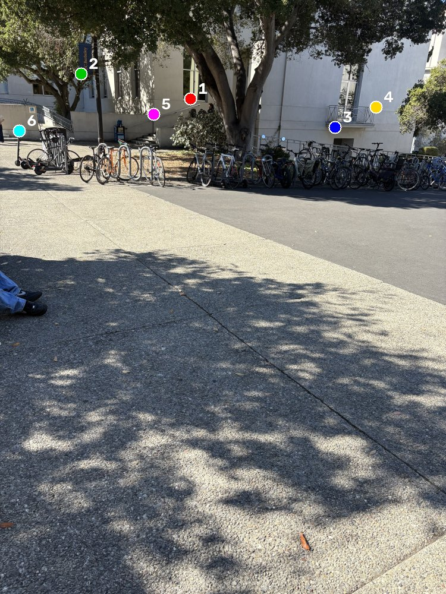 Image 1 |
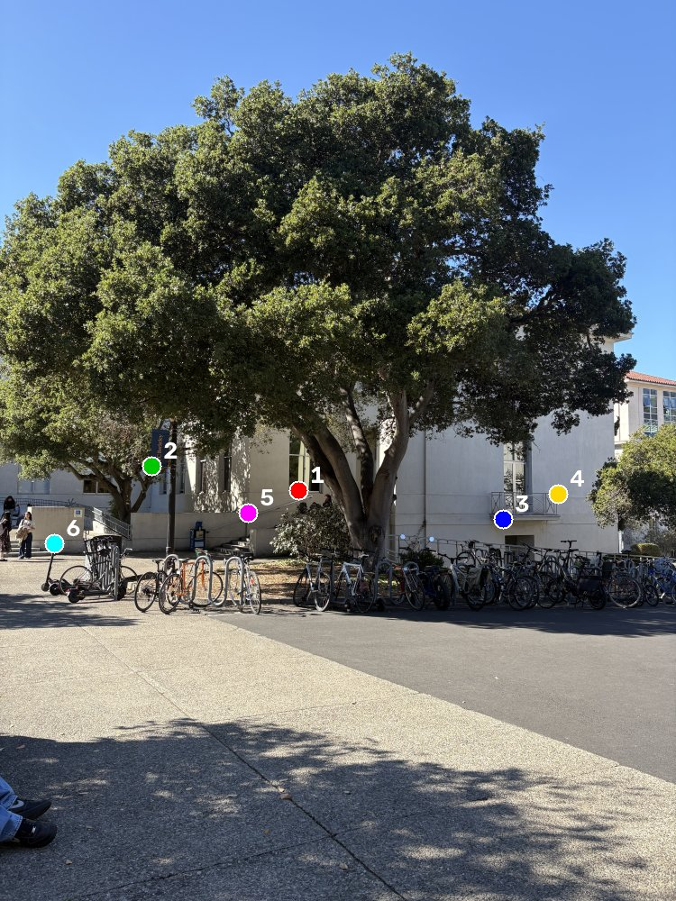 Image 2 |
|||||||||||||||||||||||||||||||||||||||||||||||||||||||||||||||||||||||||||||||||||||||||||||||||||||||||||||||||||||
System of equations
|
||||||||||||||||||||||||||||||||||||||||||||||||||||||||||||||||||||||||||||||||||||||||||||||||||||||||||||||||||||||
| 1 829 | 951 | 1 | 0 | 0 | 0 | -3 467 784 | -1 803 096 |
| 0 | 0 | 0 | 1 829 | 951 | 1 | -5 684 532 | -2 955 708 |
| 782 | 709 | 1 | 0 | 0 | 0 | -751 502 | -681 349 |
| 0 | 0 | 0 | 782 | 709 | 1 | -2 310 028 | -2 094 386 |
| 3 219 | 1 224 | 1 | 0 | 0 | 0 | -10 262 172 | -3 902 112 |
| 0 | 0 | 0 | 3 219 | 1 224 | 1 | -10 603 386 | -4 031 856 |
| 3 611 | 1 029 | 1 | 0 | 0 | 0 | -12 768 496 | -3 638 544 |
| 0 | 0 | 0 | 3 611 | 1 029 | 1 | -11 309 652 | -3 222 828 |
| 1 478 | 1 100 | 1 | 0 | 0 | 0 | -2 324 894 | -1 730 300 |
| 0 | 0 | 0 | 1 478 | 1 100 | 1 | -4 807 934 | -3 578 300 |
| 185 | 1 258 | 1 | 0 | 0 | 0 | -63 825 | -434 010 |
| 0 | 0 | 0 | 185 | 1 258 | 1 | -637 325 | -4 333 810 |
| 1 896 |
| 3 108 |
| 961 |
| 2 954 |
| 3 188 |
| 3 294 |
| 3 536 |
| 3 132 |
| 1 573 |
| 3 253 |
| 345 |
| 3 445 |
| 0.8599 | -0.1567 | 351.90 |
| -0.0264 | 0.5594 | 2430.35 |
| 1.829e-6 | -7.192e-5 | 1.0000 |
| Tree: image 3 → image 2 (6 correspondences) | ||||||||||||||||||||||||||||||||||||||||||||||||||||||||||||||||||||||||||||||||||||||||||||||||||||||||||||||||||||||
|---|---|---|---|---|---|---|---|---|---|---|---|---|---|---|---|---|---|---|---|---|---|---|---|---|---|---|---|---|---|---|---|---|---|---|---|---|---|---|---|---|---|---|---|---|---|---|---|---|---|---|---|---|---|---|---|---|---|---|---|---|---|---|---|---|---|---|---|---|---|---|---|---|---|---|---|---|---|---|---|---|---|---|---|---|---|---|---|---|---|---|---|---|---|---|---|---|---|---|---|---|---|---|---|---|---|---|---|---|---|---|---|---|---|---|---|---|---|---|
|
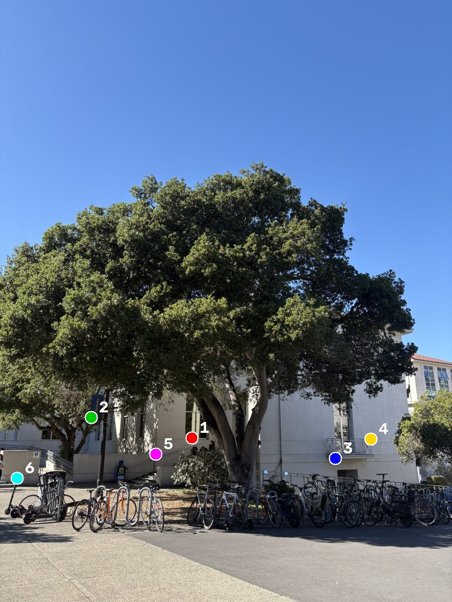 Image 3 |

Image 2 |
|||||||||||||||||||||||||||||||||||||||||||||||||||||||||||||||||||||||||||||||||||||||||||||||||||||||||||||||||||||
System of equations
|
||||||||||||||||||||||||||||||||||||||||||||||||||||||||||||||||||||||||||||||||||||||||||||||||||||||||||||||||||||||
| 1 821 | 4 154 | 1 | 0 | 0 | 0 | -3 452 616 | -7 875 984 |
| 0 | 0 | 0 | 1 821 | 4 154 | 1 | -5 659 668 | -12 910 632 |
| 865 | 3 964 | 1 | 0 | 0 | 0 | -831 265 | -3 809 404 |
| 0 | 0 | 0 | 865 | 3 964 | 1 | -2 555 210 | -11 709 656 |
| 3 180 | 4 352 | 1 | 0 | 0 | 0 | -10 137 840 | -13 874 176 |
| 0 | 0 | 0 | 3 180 | 4 352 | 1 | -10 474 920 | -14 335 488 |
| 3 513 | 4 166 | 1 | 0 | 0 | 0 | -12 421 968 | -14 730 976 |
| 0 | 0 | 0 | 3 513 | 4 166 | 1 | -11 002 716 | -13 047 912 |
| 1 477 | 4 312 | 1 | 0 | 0 | 0 | -2 323 321 | -6 782 776 |
| 0 | 0 | 0 | 1 477 | 4 312 | 1 | -4 804 681 | -14 026 936 |
| 165 | 4 537 | 1 | 0 | 0 | 0 | -56 925 | -1 565 265 |
| 0 | 0 | 0 | 165 | 4 537 | 1 | -568 425 | -15 629 965 |
| 1 896 |
| 3 108 |
| 961 |
| 2 954 |
| 3 188 |
| 3 294 |
| 3 536 |
| 3 132 |
| 1 573 |
| 3 253 |
| 345 |
| 3 445 |
| 1.3437 | 0.1861 | -568.98 |
| -6.685e-3 | 1.5287 | -1979.42 |
| -2.511e-6 | 9.687e-5 | 1.0000 |
A.3 Warp the Images
Both warps use inverse warping. First I push the source image's four corners through
The two methods differ only in how they sample that color.
Nearest neighbor rounds the source location to the closest pixel.
Bilinear takes the four surrounding pixels and blends them by
distance: first along |
|
RectificationTo rectify, I clicked the 4 corners of something I know is a rectangle and computed the homography that sends them to the corners of an axis-aligned rectangle. |
| Door | |
|---|---|
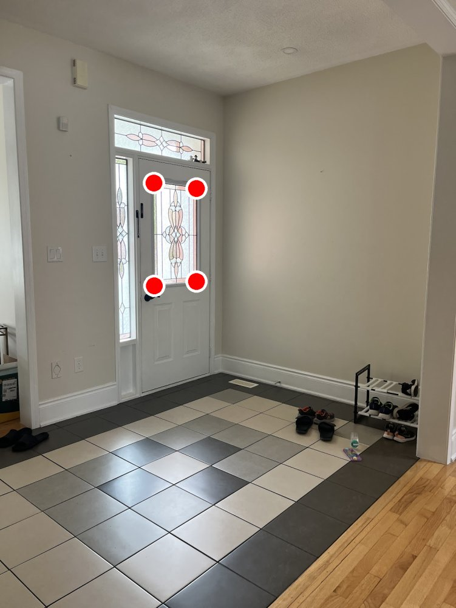 Original, with door window corners marked |
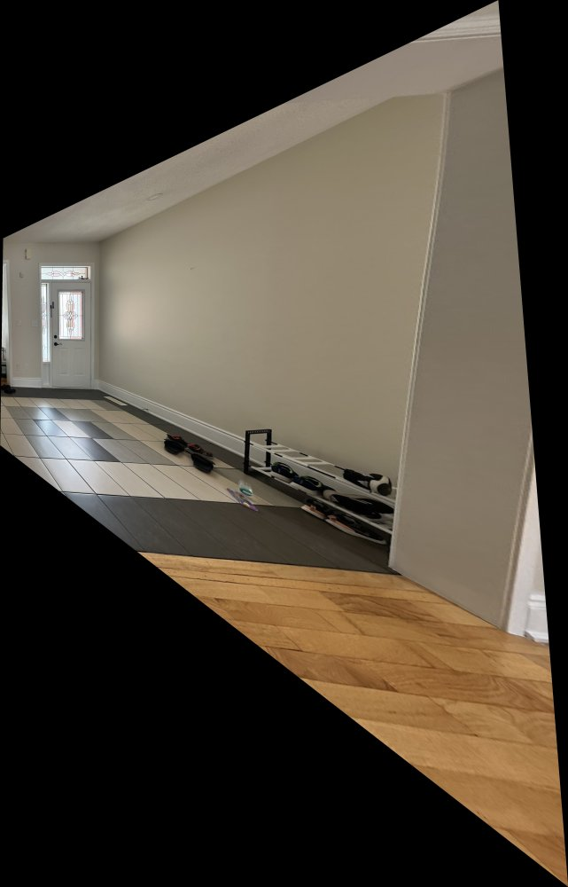 Rectified (bilinear) |
Window | |
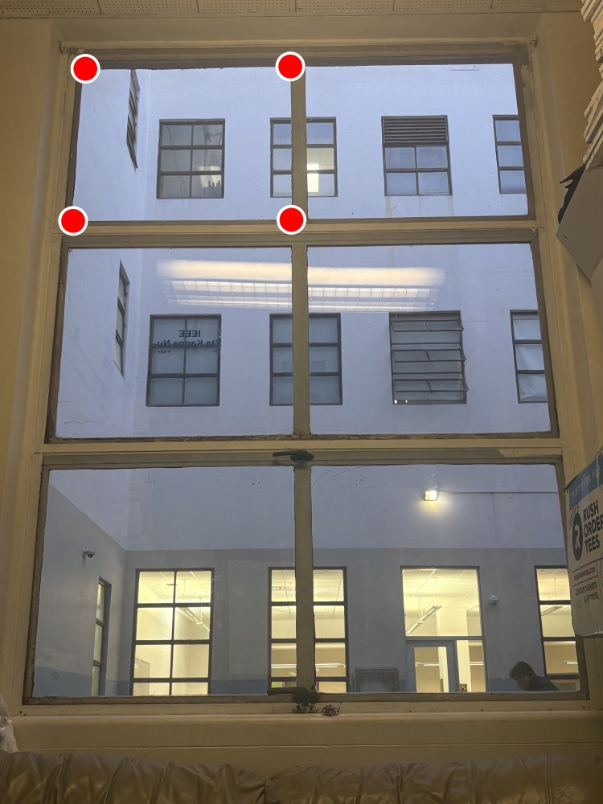 Original, with top-left pane corners marked |
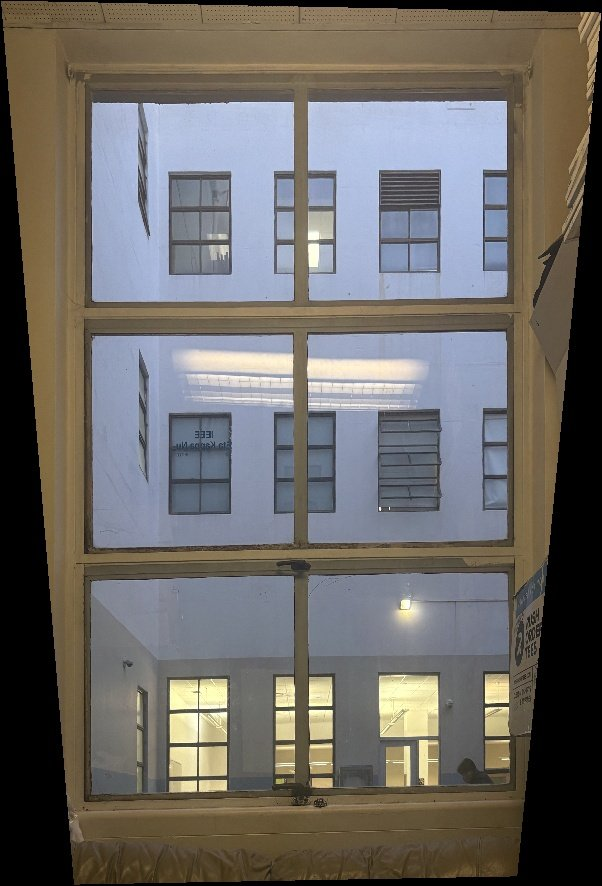 Rectified (bilinear) |
Nearest Neighbor vs. BilinearThe door rectification stretches the right side of the image a lot, so it's a good place to compare. Nearest neighbor is faster but gets blocky and jagged where pixels are upsampled. Bilinear is slower (four lookups per pixel instead of one) but much smoother. For the mosaics I used nearest neighbor, since the photos are big and it ran a lot faster on my computer. |
|
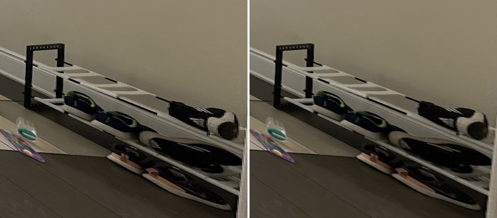 Nearest neighbor (left) vs. bilinear (right), cropped from the rectified door |
A.4 Blend the Images into a MosaicFor each set I start with image 2 as the mosaic, then warp images 1 and 3 into its frame with their homographies and add them one at a time. Each time, the canvas grows to fit the warped image's bounding box.
To hide the seams, I weight each pixel in the overlap by its distance to the edge of
its image (using a distance transform), so each image fades out toward its border.
Then I do two-band blending: the low frequencies (Gaussian blur) are blended with the
smooth, blurred weights, and the high frequencies use the sharp weights so edges don't
ghost. I used |
|
| Gateway | ||
|---|---|---|
Image 1 |
Image 2 |
Image 3 |
|
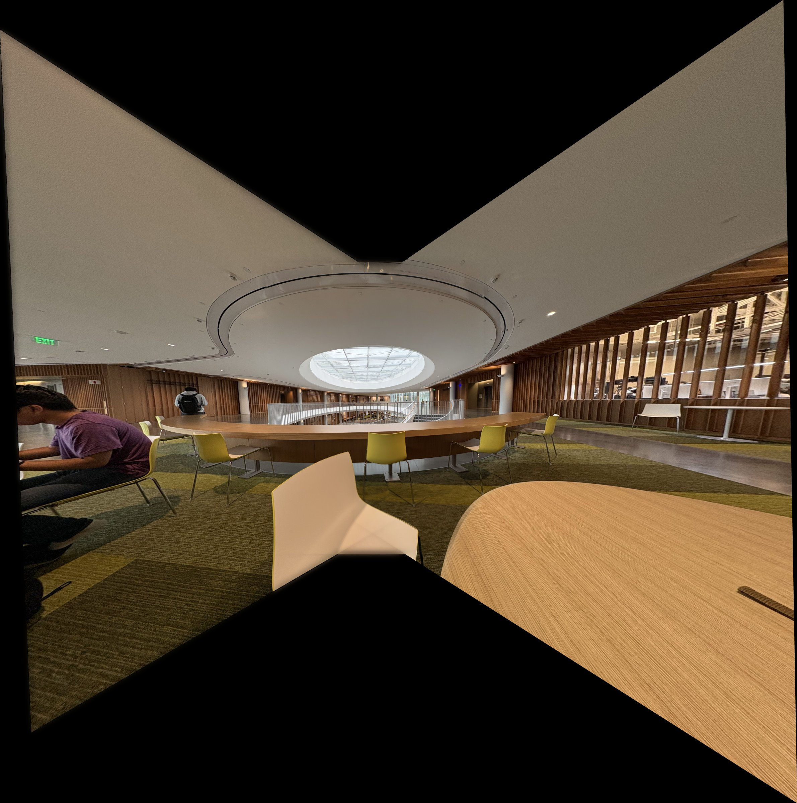 Gateway mosaic |
||
Sather Gate | ||
|---|---|---|
Image 1 |
Image 2 |
Image 3 |
|
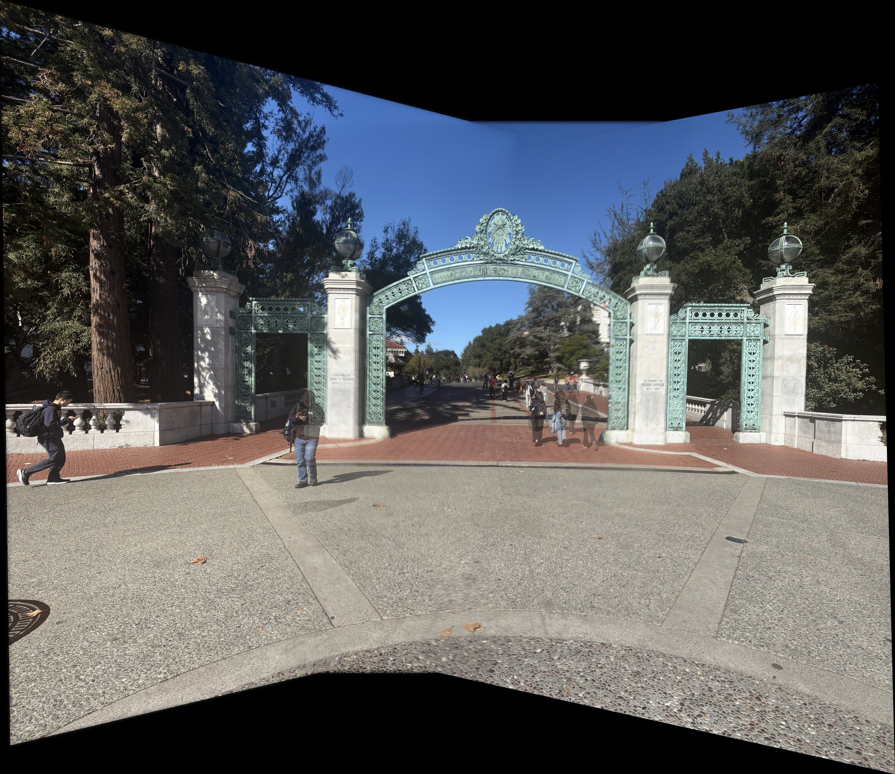 Sather Gate mosaic |
||
Tree | ||
|---|---|---|
Image 1 |
Image 2 |
Image 3 |
|
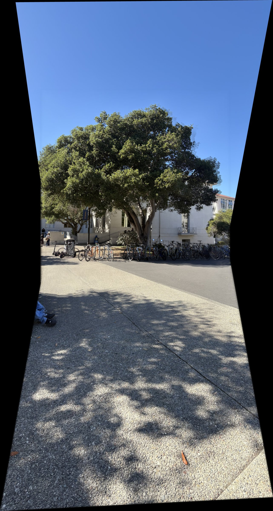 Tree mosaic |
||
|
The blending hides the exposure differences between shots pretty well. People who moved between shots still ghost (like the walkers under Sather Gate), and the wide-angle gateway shots leave a visible seam on the white chair in front. |
|
Website template from Jon Barron. |